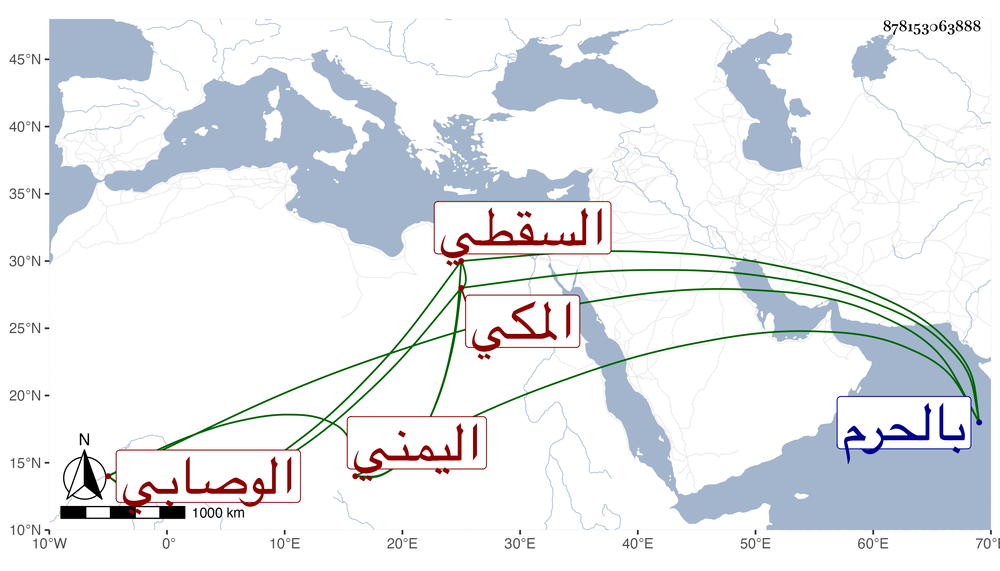

0902Sakhawi.DawLamic.ITO20230111-ara1.EIS1600.878153063888
Biography ID: 878153063888
790
داود بن أحمد بن سبأ صارم الدين الوصابي الأصل اليمني المكي السقطي أحد أصحاب عمر العرابي والقائم بعده في حلقته بالحرم بعد موت موسى الجبرتي القائم عن شيخهما وله فيه مدائح كثيرة إلى أن توفي سنة ثلاثين ودفن بالقرب منه ، وكان سقطيا يتكسب ببيع السفط بسوق الندا ضعيف الحال إلى أن صحب المشار إليه واتفق انه وقعت له هفوة فجعل عليه شيخه نحو خمسين مثقالا للفقراء فبذلها بطيب نفس وفرقت عليهم فعادت عليه بركته ولم تتم السنة حتى ربح في سقط بائر كان عنده حملة فاتسعت دائرته وصار لا يرد فقيرا من عطاء أو قرض ويتمنى أن شيخنا يأخذ منه لما شاهده من البركة . ذكره ابن فهد .
